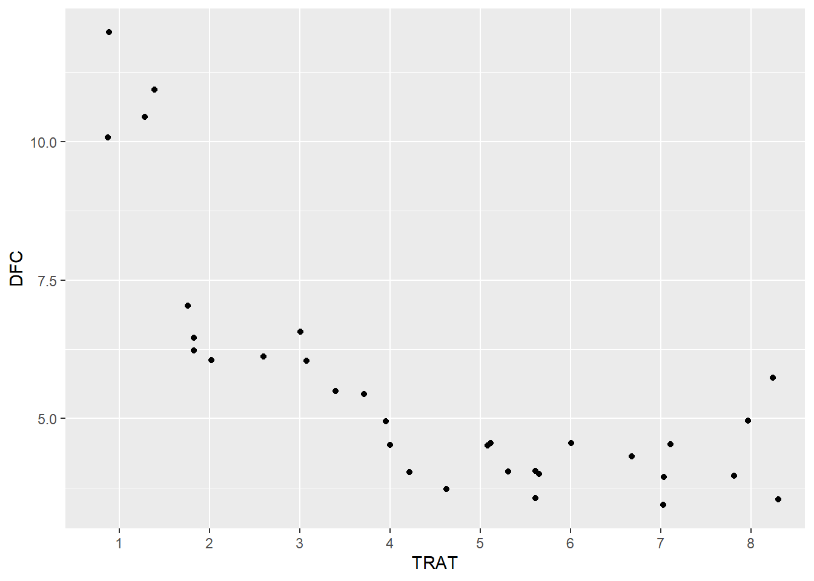
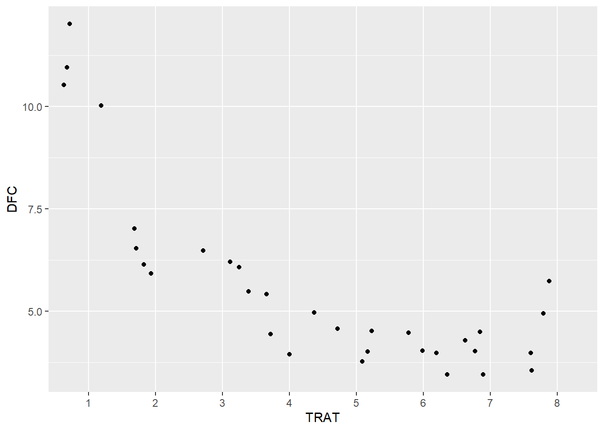
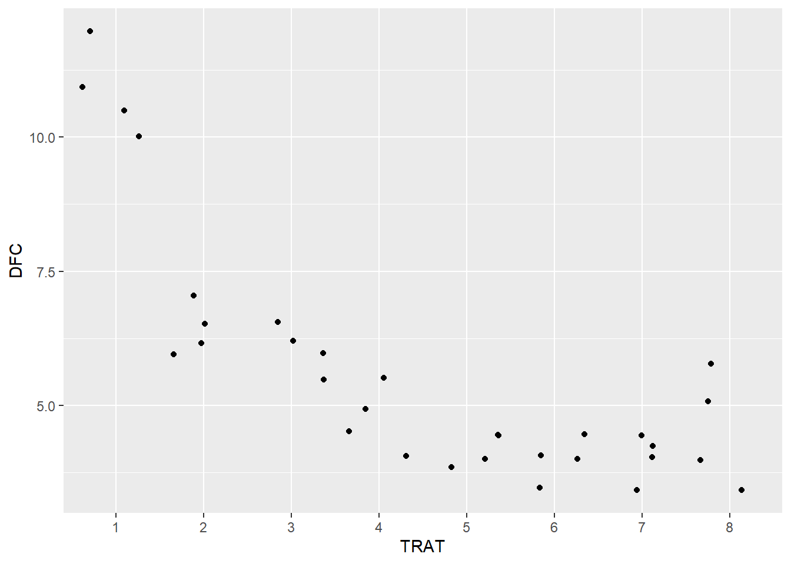
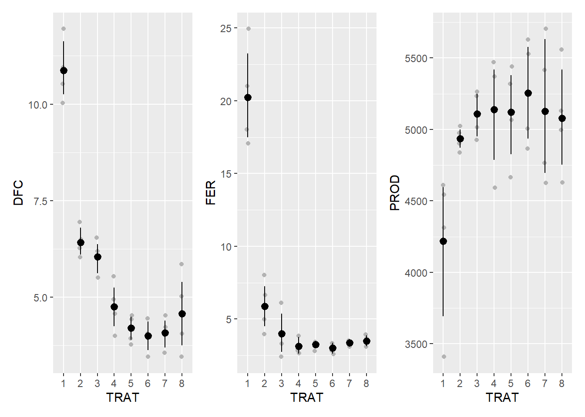

library(tidyverse)
library(gsheet)
library(patchwork)
library(r4pde)
library(emmeans)
library(performance)
library(multcomp)
library(agricolae)
library(epifitter)Transformações, ANOVA e teste de média
Durante a aula 8, foram trabalhados dados para apresender a fazer transformações, ANOVA e teste de médias.
Pacotes carregados
Importando dados
soja <- gsheet2tbl("https://docs.google.com/spreadsheets/d/1bq2N19DcZdtax2fQW9OHSGMR0X2__Z9T/edit#gid=866852711")Transformar para fator = preciso tranformar fator, pois esta como número.
soja <- soja |>
mutate(TRAT = as.factor(TRAT),
BLOCO = as.factor(BLOCO))
is.vector(soja)[1] FALSEis.factor(soja$TRAT)[1] TRUEvisualização dos dados
Para visualização dos dados das variáveis dependentes (DFC, FER e PROD), serão construídos gráficos de pontos (ggplot: geom_jitter) acrescido do intervalo de confiança. Para a apresentação do intervalo de confiança, será utilizada a função stat_summary (fun.data), com o argumento "mean_cl_boot".
Para visualizar os dados, para variavel DFC.
dfc <- soja |>
ggplot(aes(TRAT, DFC)) +
geom_jitter(which = 0.05)
dfc
Para variavel FER:
fer <- soja |>
ggplot(aes(TRAT, FER)) +
geom_jitter(which = 0.05)
dfc
Para variavel prod:
prod <- soja |>
ggplot(aes(TRAT, PROD)) +
geom_jitter(which = 0.05)
dfc
Para juntar os 3 graficos:
(dfc+fer+prod)dfc <- soja |>
ggplot(aes(TRAT, DFC)) +
geom_jitter(width = 0.05, color = "gray70") +
stat_summary(fun.data = "mean_cl_boot", color = "black")
dfcfer <- soja |>
ggplot(aes(TRAT, FER)) +
geom_jitter(width = 0.05, color = "gray70") +
stat_summary(fun.data = "mean_cl_boot", color = "black")
dfcprod <- soja |>
ggplot(aes(TRAT, PROD)) +
geom_jitter(width = 0.05, color = "gray70") +
stat_summary(fun.data = "mean_cl_boot", color = "black")
dfc(dfc+fer+prod)
ANOVA DFC
aov_dfc <- lm(DFC ~ TRAT + BLOCO,
data = soja)
anova(aov_dfc)Analysis of Variance Table
Response: DFC
Df Sum Sq Mean Sq F value Pr(>F)
TRAT 7 149.299 21.3284 51.5490 8.218e-12 ***
BLOCO 3 0.461 0.1537 0.3716 0.7743
Residuals 21 8.689 0.4138
---
Signif. codes: 0 '***' 0.001 '**' 0.01 '*' 0.05 '.' 0.1 ' ' 1#Pvalor indicando com *** e o valor baixo, indiccando que o efeito do tratamento é extremamente significativo. Para blocos, não foi significativo. Pode seguir as análises por que pelo menos uma das médias difere uma da outra, agora temos que saber se podemos confiar na anova e testar as suas premissas de normalidade e homosdasticidade.Verificação das premissas
check_heteroscedasticity(aov_dfc)OK: Error variance appears to be homoscedastic (p = 0.532).check_normality(aov_dfc)OK: residuals appear as normally distributed (p = 0.978).Comparação de médias
Para comparação de médias o modelo gerado acima será aplicado à função emmeans para criação de um novo objeto. Essa função estima uma média com base no modelo, logo algumas vezes pode não ser igual a média aritmética.
medias_dfc <- emmeans(aov_dfc, ~ TRAT)
medias_dfc TRAT emmean SE df lower.CL upper.CL
1 10.88 0.322 21 10.21 11.54
2 6.42 0.322 21 5.76 7.09
3 6.05 0.322 21 5.38 6.72
4 4.75 0.322 21 4.08 5.42
5 4.20 0.322 21 3.53 4.87
6 4.00 0.322 21 3.33 4.67
7 4.08 0.322 21 3.41 4.74
8 4.58 0.322 21 3.91 5.24
Results are averaged over the levels of: BLOCO
Confidence level used: 0.95 Na função pwpm, há três informações úteis. Na diagonal, é apresentado o valor médio estimado para cada tratamento. Acima da diagonal, são plotados os valores de probabilidade, relacionados ao teste de Tukey, referentes às comparações múltiplas entre tratamentos. Abaixo da diagonal, há a diferença de valores médios entre os tratamentos.
pwpm(medias_dfc) 1 2 3 4 5 6 7 8
1 [10.87] <.0001 <.0001 <.0001 <.0001 <.0001 <.0001 <.0001
2 4.450 [ 6.42] 0.9896 0.0249 0.0017 0.0006 0.0009 0.0107
3 4.825 0.375 [ 6.05] 0.1329 0.0107 0.0040 0.0058 0.0628
4 6.125 1.675 1.300 [ 4.75] 0.9202 0.7173 0.8072 0.9999
5 6.675 2.225 1.850 0.550 [ 4.20] 0.9998 1.0000 0.9896
6 6.875 2.425 2.050 0.750 0.200 [ 4.00] 1.0000 0.9020
7 6.800 2.350 1.975 0.675 0.125 -0.075 [ 4.07] 0.9499
8 6.300 1.850 1.475 0.175 -0.375 -0.575 -0.500 [ 4.57]
Row and column labels: TRAT
Upper triangle: P values adjust = "tukey"
Diagonal: [Estimates] (emmean)
Lower triangle: Comparisons (estimate) earlier vs. latercld(medias_dfc, Letters = LETTERS) TRAT emmean SE df lower.CL upper.CL .group
6 4.00 0.322 21 3.33 4.67 A
7 4.08 0.322 21 3.41 4.74 A
5 4.20 0.322 21 3.53 4.87 A
8 4.58 0.322 21 3.91 5.24 AB
4 4.75 0.322 21 4.08 5.42 AB
3 6.05 0.322 21 5.38 6.72 BC
2 6.42 0.322 21 5.76 7.09 C
1 10.88 0.322 21 10.21 11.54 D
Results are averaged over the levels of: BLOCO
Confidence level used: 0.95
P value adjustment: tukey method for comparing a family of 8 estimates
significance level used: alpha = 0.05
NOTE: If two or more means share the same grouping symbol,
then we cannot show them to be different.
But we also did not show them to be the same. ANOVA fer
aov_fer <- lm(FER ~ TRAT + BLOCO,
data = soja)
anova(aov_fer)Analysis of Variance Table
Response: FER
Df Sum Sq Mean Sq F value Pr(>F)
TRAT 7 978.87 139.838 55.1717 4.218e-12 ***
BLOCO 3 3.84 1.279 0.5045 0.6834
Residuals 21 53.23 2.535
---
Signif. codes: 0 '***' 0.001 '**' 0.01 '*' 0.05 '.' 0.1 ' ' 1Verificação das premissas
check_heteroscedasticity(aov_fer)Warning: Heteroscedasticity (non-constant error variance) detected (p < .001).check_normality(aov_fer)Warning: Non-normality of residuals detected (p = 0.008).## Tranformação por logarítimo
soja <- soja |>
mutate(FER2 = log(FER))
aov_fer2 <- lm (FER2 ~ TRAT + BLOCO, data = soja)
anova(aov_fer2)Analysis of Variance Table
Response: FER2
Df Sum Sq Mean Sq F value Pr(>F)
TRAT 7 11.5210 1.64585 42.9665 4.838e-11 ***
BLOCO 3 0.2064 0.06880 1.7961 0.1788
Residuals 21 0.8044 0.03831
---
Signif. codes: 0 '***' 0.001 '**' 0.01 '*' 0.05 '.' 0.1 ' ' 1check_normality(aov_fer2)OK: residuals appear as normally distributed (p = 0.255).check_heteroscedasticity(aov_fer2)Warning: Heteroscedasticity (non-constant error variance) detected (p = 0.035).#A transformação foi suficiente para normalizar os valores do resíduo, no entanto, ainda há heterocedasticidade.Transformação - Box-Cox
b <- boxcox(lm(soja$FER ~1))
lambda <- b$x[which.max(b$y)]
lambda[1] -1.555556soja$FER <- (soja$FER^lambda -1)/lambda
soja$FER [1] 0.6350214 0.6372165 0.6385564 0.6356880 0.6078962 0.5684565 0.6175462
[8] 0.5902763 0.6032606 0.5512801 0.4882973 0.5684565 0.5684565 0.5264644
[15] 0.4882973 0.5264644 0.5512801 0.5512801 0.5264644 0.5264644 0.5512801
[22] 0.4882973 0.5264644 0.5264644 0.5512801 0.5512801 0.5264644 0.5512801
[29] 0.5684565 0.5512801 0.5264644 0.5512801Novo modelo - Após transformação
aov_fer2 <- lm(FER ~ TRAT + BLOCO,
data = soja)
anova(aov_fer2)Analysis of Variance Table
Response: FER
Df Sum Sq Mean Sq F value Pr(>F)
TRAT 7 0.041641 0.0059488 12.9020 2.436e-06 ***
BLOCO 3 0.005895 0.0019649 4.2616 0.01687 *
Residuals 21 0.009683 0.0004611
---
Signif. codes: 0 '***' 0.001 '**' 0.01 '*' 0.05 '.' 0.1 ' ' 1#Para os dados transformados por Box-Cox, o fator fixo TRAT continua possuindo efeito significativo, logo há algum tratamento que difere dos demais. Para o fator BLOCO, não houve efeito já que não há diferença significativa entre eles.Verificação das premissas
check_heteroscedasticity(aov_fer2)OK: Error variance appears to be homoscedastic (p = 0.872).check_normality(aov_fer2)OK: residuals appear as normally distributed (p = 0.787).#Os testes demonstram que a transformação de Box-Cox foi suficiente para conferir normalidade aos resíduos e homogeneidade de variância entre os grupos.Comparação de médias
medias_fer2 <- emmeans(aov_fer2, ~ TRAT)
medias_fer2 TRAT emmean SE df lower.CL upper.CL
1 0.637 0.0107 21 0.614 0.659
2 0.596 0.0107 21 0.574 0.618
3 0.553 0.0107 21 0.530 0.575
4 0.527 0.0107 21 0.505 0.550
5 0.539 0.0107 21 0.517 0.561
6 0.523 0.0107 21 0.501 0.545
7 0.545 0.0107 21 0.523 0.567
8 0.549 0.0107 21 0.527 0.572
Results are averaged over the levels of: BLOCO
Confidence level used: 0.95 cld(medias_fer2, Letters = LETTERS) TRAT emmean SE df lower.CL upper.CL .group
6 0.523 0.0107 21 0.501 0.545 A
4 0.527 0.0107 21 0.505 0.550 A
5 0.539 0.0107 21 0.517 0.561 A
7 0.545 0.0107 21 0.523 0.567 A
8 0.549 0.0107 21 0.527 0.572 AB
3 0.553 0.0107 21 0.530 0.575 AB
2 0.596 0.0107 21 0.574 0.618 BC
1 0.637 0.0107 21 0.614 0.659 C
Results are averaged over the levels of: BLOCO
Confidence level used: 0.95
P value adjustment: tukey method for comparing a family of 8 estimates
significance level used: alpha = 0.05
NOTE: If two or more means share the same grouping symbol,
then we cannot show them to be different.
But we also did not show them to be the same. ANOVA PROD
aov_prod <- lm(PROD ~ TRAT + BLOCO,
data = soja)
anova(aov_prod)Analysis of Variance Table
Response: PROD
Df Sum Sq Mean Sq F value Pr(>F)
TRAT 7 2993906 427701 2.6367 0.04021 *
BLOCO 3 105665 35222 0.2171 0.88340
Residuals 21 3406431 162211
---
Signif. codes: 0 '***' 0.001 '**' 0.01 '*' 0.05 '.' 0.1 ' ' 1#Para o fator fixo TRAT, há efeito significativo, logo há algum tratamento que difere dos demais. Para o fator BLOCO, não houve efeito já que não há diferença significativa entre eles.Verificação das premissas
check_heteroscedasticity(aov_prod)OK: Error variance appears to be homoscedastic (p = 0.215).#homegenidade de variancia e heteroscedasticidade é a mesma coisa
check_normality(aov_prod)OK: residuals appear as normally distributed (p = 0.542).medias_prod <- emmeans(aov_prod, ~ TRAT)
medias_prod TRAT emmean SE df lower.CL upper.CL
1 4219 201 21 3800 4638
2 4935 201 21 4516 5354
3 5110 201 21 4691 5529
4 5140 201 21 4721 5559
5 5122 201 21 4703 5541
6 5256 201 21 4837 5675
7 5128 201 21 4709 5546
8 5078 201 21 4659 5497
Results are averaged over the levels of: BLOCO
Confidence level used: 0.95 #Os testes mostram que os resíduos são normalmente distribuídos e que há homogeneidade de variâncias entre os grupos. Assim, é possível continuar a comparação de médias.pwpm(medias_prod) 1 2 3 4 5 6 7 8
1 [4219] 0.2430 0.0792 0.0640 0.0728 0.0272 0.0700 0.0985
2 -715.8 [4935] 0.9983 0.9953 0.9974 0.9430 0.9968 0.9995
3 -890.8 -175.0 [5110] 1.0000 1.0000 0.9994 1.0000 1.0000
4 -921.0 -205.3 -30.3 [5140] 1.0000 0.9999 1.0000 1.0000
5 -902.8 -187.0 -12.0 18.3 [5122] 0.9997 1.0000 1.0000
6 -1037.0 -321.3 -146.3 -116.0 -134.3 [5256] 0.9998 0.9981
7 -908.3 -192.5 -17.5 12.8 -5.5 128.8 [5127] 1.0000
8 -859.0 -143.3 31.7 62.0 43.7 178.0 49.2 [5078]
Row and column labels: TRAT
Upper triangle: P values adjust = "tukey"
Diagonal: [Estimates] (emmean)
Lower triangle: Comparisons (estimate) earlier vs. latercld(medias_prod, Letters = LETTERS) TRAT emmean SE df lower.CL upper.CL .group
1 4219 201 21 3800 4638 A
2 4935 201 21 4516 5354 AB
8 5078 201 21 4659 5497 AB
3 5110 201 21 4691 5529 AB
5 5122 201 21 4703 5541 AB
7 5128 201 21 4709 5546 AB
4 5140 201 21 4721 5559 AB
6 5256 201 21 4837 5675 B
Results are averaged over the levels of: BLOCO
Confidence level used: 0.95
P value adjustment: tukey method for comparing a family of 8 estimates
significance level used: alpha = 0.05
NOTE: If two or more means share the same grouping symbol,
then we cannot show them to be different.
But we also did not show them to be the same. df_prod <- data.frame(medias_prod)
df_prod |>
ggplot(aes(TRAT, emmean))+
geom_point()+
ylim(3000,6500)+
geom_errorbar(aes(min = lower.CL,
max = upper.CL),
width = 0.1)+
annotate (geom = "text", x = 1.2, y = 4200,
label = "A")
#Gráfico com médias e intervalo de confiança, uma maneira visual de apresentar os resultados.CONJUNTO DE DADOS COUVE
Importando dados
couve <- gsheet2tbl("https://docs.google.com/spreadsheets/d/1bq2N19DcZdtax2fQW9OHSGMR0X2__Z9T/edit#gid=1807247585")Para construção de uma curva de progresso da doença usaremos como exemplo um conjunto de dados que descreve diferentes métodos de irrigação (variável independente, um fator, 2 níveis) e seu efeito sobre a severidade (variável dependente) ao longo dos dias.
cov <- couve |>
ggplot(aes(day, severity)) +
geom_point(which = 0.05)+
facet_wrap(~~ Irrigation)
cov
Foi criada uma figura com dois gráficos. Um para cada nível do fator “Irrigation”:
couve |>
group_by(day, Irrigation) |>
summarise(mean_sev = mean(severity)) |>
ggplot(aes(day, mean_sev)) +
geom_point(which = 0.05)+
geom_line()+
facet_wrap(~~ Irrigation)
Cálculo da área abaixo da curva de progresso da doença
Para o cálculo da área abaixo da curva de progresso da doença (AACPD, ou “area under the disease progress curve”, AUDPC), será criado um novo dataframe. Para isso, será feito o agrupamento (group_by) das variáveis em função do tratamento (”Irrigation”) e das repetições (“rep”). Em seguida, será utilizada a função summarise para o cálculo da AACPD (função AUDPC, pacote epifitter).
#AACPD
couve2 <- couve |>
group_by(Irrigation, rep) |>
summarise(aacpd = AUDPC(day, severity))ANOVA
m_couve <- lm(aacpd ~ Irrigation + factor(rep), data = couve2)
anova(m_couve)Analysis of Variance Table
Response: aacpd
Df Sum Sq Mean Sq F value Pr(>F)
Irrigation 1 0.23602 0.236017 10.605 0.08275 .
factor(rep) 2 0.61291 0.306454 13.771 0.06770 .
Residuals 2 0.04451 0.022254
---
Signif. codes: 0 '***' 0.001 '**' 0.01 '*' 0.05 '.' 0.1 ' ' 1#A ANOVA mostra que não há diferença entre as áreas.#coeficiente de variação
#muito baixo
cv.model(m_couve)[1] 1.097572